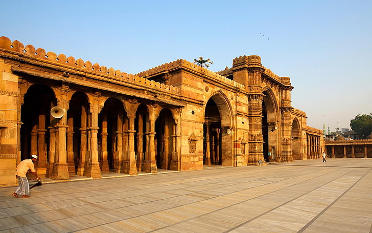
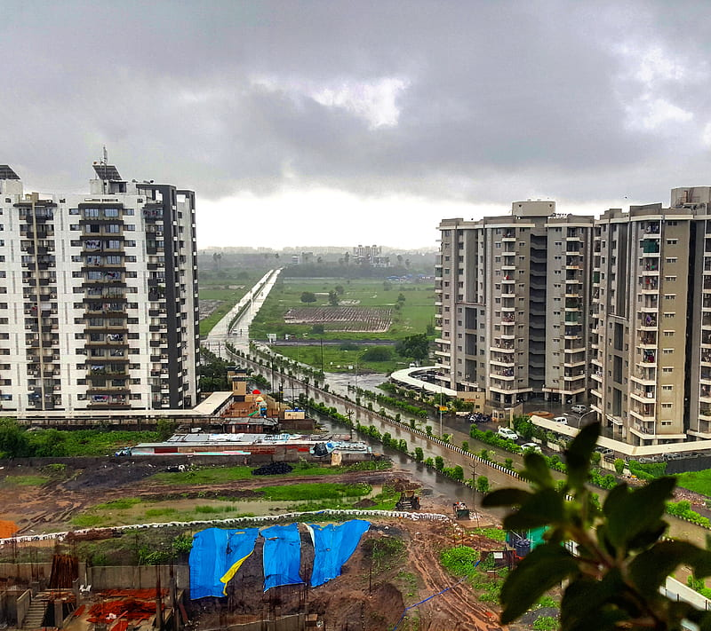
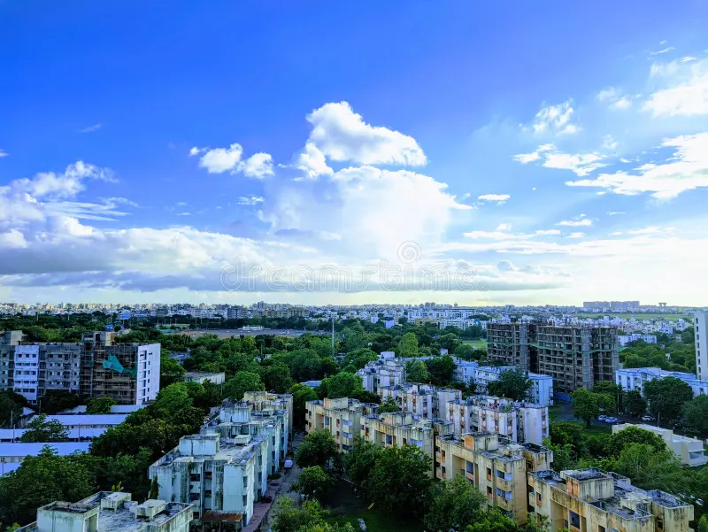
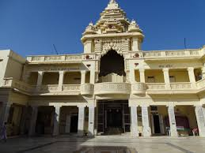

Major Cities and Urban Centers
Ahmedabad
- Sabarmati Ashram: The former residence of Mahatma Gandhi, a key site in India's independence movement.
- Adalaj Stepwell: A beautifully designed stepwell showcasing intricate carvings and architecture.
- Kankaria Lake: A popular recreational area with a zoo, toy train, and amusement park.

- Jama Masjid: A stunning mosque built in 1424 with a blend of Hindu and Islamic architectural styles.
- Manek Chowk: A bustling market square, popular for its street food and jewelry shops.
- Sidi Saiyyed Mosque: Famous for its intricate stone latticework windows, known as 'Jalis'.
Vadodara
- Laxmi Vilas Palace: A grand royal residence, four times the size of Buckingham Palace.
- Sayaji Gardens: A beautiful public park with a museum and zoo, perfect for a day out.
- Baroda Museum: Home to a vast collection of artifacts, paintings, and sculptures.
- Eme Temple: A unique temple dedicated to Lord Shiva, known for its modern architecture.
- Ajwa Water Park: A popular amusement park offering fun rides and activities.
- Maharaja Fateh Singh Museum: A treasure trove of royal artifacts and paintings.
Surat
- Dumas Beach: A popular beach along the Arabian Sea, known for its black sand and spooky legends.
- Sarthana Nature Park: A large zoo and botanical garden, great for a day with family and kids.
- Science Centre: A museum that showcases scientific exhibits, a planetarium, and an art gallery.

- Surat Castle: A historic fort built by the Portuguese to defend the city from invaders.
- Gopi Talav: A large lake surrounded by parks, offering boating and recreation activities.
- VR Mall: One of the largest shopping malls in Surat, offering a variety of brands, food outlets, and entertainment options.
Rajkot
- Watson Museum: A museum showcasing artifacts, including sculptures, textiles, and historical items from Rajkot's past.
- Rajkumar College: A historic educational institution known for its impressive architecture and rich history.
- Kaba Gandhi No Delo: The childhood home of Mahatma Gandhi, now a museum dedicated to his life and work.

- Ranjit Vilas Palace: A beautiful palace built in the 19th century, known for its unique architecture and gardens.
- Baba Ramdev Temple: A revered temple dedicated to the popular saint Baba Ramdev, attracting many devotees.
- Funworld Rajkot: An amusement park offering various rides and attractions for families and children.
Bhavnagar
- Takhteshwar Temple: A prominent temple dedicated to Lord Shiva, situated on a hilltop with panoramic views of the city.
- Nilambag Palace: A heritage hotel that was once a royal residence, showcasing stunning architecture and gardens.
- Bhavnagar Black Pagoda: A unique structure known for its intricate carvings and historical significance.

- Gopi Talav: A picturesque lake surrounded by gardens, perfect for leisurely strolls and picnics.
- Khodiyar Mandir: A popular temple dedicated to the goddess Khodiyar, attracting many devotees.
- Bhavnagar Science Centre: An educational facility featuring various interactive exhibits and a planetarium.
Heritage and Historical Sites
Dwarka
- Dwarkadhish Temple: An ancient temple dedicated to Lord Krishna, renowned for its intricate architecture and spiritual significance.
- Bet Dwarka: An island near Dwarka, believed to be the original residence of Lord Krishna, featuring temples and beautiful beaches.
- Nageshwar Jyotirlinga: One of the twelve Jyotirlingas, this temple is dedicated to Lord Shiva and is a major pilgrimage site.
- Sudama Setu: A beautiful bridge connecting Dwarka to Bet Dwarka, offering scenic views of the surrounding waters.
- Shri Swaminarayan Mandir: A magnificent temple known for its stunning carvings and intricate design, attracting visitors from all over.
- Dwarka Beach: A serene beach known for its calm waters and beautiful sunsets, ideal for relaxation and reflection.
Somnath
- Somnath Temple: One of the twelve Jyotirlingas, this ancient temple is a significant pilgrimage site, known for its stunning architecture and rich history.
- Prabhas Patan Museum: A museum showcasing the history and artifacts related to the Somnath region, including sculptures and inscriptions.
- Aadhipurush Temple: A revered temple located near Somnath, dedicated to Lord Krishna, with beautiful surroundings.

- Junagadh Gate: A historic gateway that once marked the entrance to the ancient city of Somnath, reflecting the region's architectural heritage.
- Gita Mandir: A temple dedicated to the Bhagavad Gita, known for its beautiful carvings and serene atmosphere.
- Somnath Beach: A tranquil beach near the temple, offering beautiful views and a peaceful environment for relaxation.
Patan
- Rani Ki Vav: A UNESCO World Heritage Site, this stepwell is renowned for its intricate carvings and architectural brilliance.
- Patan Patola Heritage: Famous for its traditional Patola sarees, this area showcases the rich textile heritage of Gujarat.
- Shankar Vav: A historic stepwell with beautiful architecture, serving as a water reservoir and a serene spot for visitors.
- Brahma Kund: A historic stepwell associated with many local legends, surrounded by temples and shrines.
- Kalika Mata Temple: An ancient temple dedicated to Goddess Kali, located on a hill with stunning views.
- Old Patan: Explore the remnants of the ancient city, with its historical buildings and structures that tell the story of its glorious past.
Champaner-Pavagadh
- Pavagadh Fort: A historic fort that offers stunning views and is known for its impressive architecture and rich history.
- Jami Masjid: An exquisite mosque built in the 15th century, showcasing Indo-Saracenic architecture.
- Champaner Archaeological Park: A UNESCO World Heritage Site featuring ruins, temples, and historical monuments.
- Kalika Mata Temple: A revered temple located on Pavagadh Hill, known for its stunning views and spiritual significance.
- Vijay Vilas Palace: A historical palace offering insights into royal architecture and the region's history.
- Ancient Stepwells: Beautifully designed stepwells that reflect the engineering prowess of the time.
Junagadh
- Uparkot Fort: A historic fort with a rich history, featuring ancient palaces, gardens, and stunning views of the surrounding area.
- Junagadh Fort: An impressive fort that dates back to the 2nd century, known for its beautiful carvings and architecture.
- Mahabat Maqbara: A magnificent mausoleum known for its Indo-Saracenic architecture and intricate detailing.
- Sinharaja Fort: A majestic fort with historical significance, offering breathtaking views of the Girnar hills.
- Sihor Fort: A historical fort with remnants of old structures and scenic surroundings.
- Shah Mardan Shah Tomb: A beautifully constructed tomb dedicated to a revered saint, showcasing exquisite architectural features.
Wildlife and Nature
Gir National Park
- Home of Asiatic Lions: Gir is the only natural habitat of Asiatic lions, offering a chance to see them in the wild.
- Rich Biodiversity: The park is home to diverse flora and fauna, including leopards, deer, and various bird species.
- Safaris: Exciting jeep safaris are available for visitors to explore the park and its wildlife.
- Flora and Fauna: The park is known for its unique ecosystem, featuring dry deciduous forests and grasslands.
- Bird Watching: Ideal for bird enthusiasts, the park hosts numerous migratory and resident bird species.
- Nature Trails: Explore various walking trails that provide insights into the park's ecology and wildlife.
Great Rann of Kutch
- Wild Ass Sanctuary: Home to the Indian Wild Ass, this sanctuary offers a unique opportunity to see these rare animals in their natural habitat.
- Flamingo City: A seasonal hotspot for migratory birds, especially flamingos, providing a breathtaking view of these beautiful birds.
- Kutch Desert Wildlife Sanctuary: Encompassing vast stretches of arid land, this sanctuary is rich in biodiversity and features various flora and fauna.

- White Rann: Known for its stunning salt flats, especially beautiful during the full moon, offering a surreal experience.
- Local Culture: Explore the vibrant culture of the Kutch region, including traditional crafts, music, and dance performances.
- Rann Utsav: An annual festival showcasing the culture, crafts, and cuisine of Kutch, held during the winter months.
Little Rann of Kutch
- Wild Ass Sanctuary: Home to the endangered Asiatic Wild Ass, this sanctuary is a unique ecosystem with diverse flora and fauna.
- Bird Watching: A paradise for bird watchers, especially during the migratory season, with various species including flamingos and pelicans.
- Salt Flats: Experience the vast salt flats that create a stunning landscape, especially during sunrise and sunset.

- Nature Trails: Explore the diverse landscapes through guided nature trails, perfect for photography and exploration.
- Traditional Villages: Visit nearby villages to experience the local culture and lifestyle of the Kutch region.
- Flamingo Watch: Visit during the migration season to see thousands of flamingos flocking to the area.
Blackbuck National Park
- Wildlife Viewing: Home to the majestic blackbuck antelope, along with various other species like nilgai and chital.
- Birdwatching: A paradise for birdwatchers, with numerous migratory and resident bird species.
- Nature Trails: Scenic trails for walking and exploring the diverse flora and fauna of the park.
- Safari Rides: Experience guided jeep safaris to explore the park's vast landscapes.
- Photography: An ideal location for nature and wildlife photography enthusiasts.
- Flora Diversity: Explore the unique plant species native to the region, including grasslands and scrub forests.
Marine National Park
- Introduction: The Marine National Park, located in the Gulf of Kutch, is renowned for its rich biodiversity and stunning marine life.
- Coral Reefs: Home to vibrant coral reefs, the park offers opportunities for snorkeling and diving to explore underwater beauty.
- Wildlife: The park is inhabited by various species including dolphins, sea turtles, and numerous fish species, making it a paradise for nature lovers.
- Best Time to Visit: The ideal time to explore the park is from November to March when the weather is pleasant.
- Activities: Visitors can enjoy activities like bird watching, eco-tours, and exploring the diverse flora and fauna of the region.
- Conservation Efforts: The park is actively involved in conservation efforts to protect its unique ecosystems and wildlife.
Beaches and Coastal Areas
Diu
- Nagoa Beach: A crescent-shaped beach popular for its calm waters, perfect for swimming and water sports.
- Ghoghla Beach: Known for its golden sands and serene atmosphere, ideal for a peaceful retreat.
- Jallandhar Beach: Famous for its tranquility and a small shrine dedicated to Jallandhar, offering stunning sunset views.
- Chakratirth Beach: A secluded beach with a hilltop offering panoramic views of the Arabian Sea.
- Vanakbara Beach: A fishing beach located near the fishing village of Vanakbara, known for its local culture.
- St. Paul’s Church: A beautiful church near the coast, known for its baroque architecture and historical significance.
Mandvi
- Mandvi Beach: A serene and clean beach known for its golden sand, clear waters, and peaceful atmosphere.
- Vijay Vilas Palace Beach: A private beach near the majestic Vijay Vilas Palace, offering scenic beauty and solitude.
- Shyamji Krishna Varma Memorial: A coastal memorial built in honor of freedom fighter Shyamji Krishna Varma, offering views of the Arabian Sea.
- Wind Farms Beach: A unique beach featuring windmills, offering a blend of nature and technology along the coastline.
- Topansar Lake: A freshwater lake located near the coast, popular for bird watching and picnics.
- Mazar-e-Noorani: A spiritual site located near the coast, with serene surroundings and beautiful views.
Porbandar
- Chowpatty Beach: A scenic and clean beach, ideal for evening strolls and enjoying the coastal breeze.
- Porbandar Beach: A serene spot known for its beautiful sunsets, perfect for relaxation and quiet time by the sea.
- Harshad Mata Temple Beach: A peaceful beach near the historic Harshad Mata Temple, offering a tranquil atmosphere.

- Madhavpur Beach: A less crowded, picturesque beach with golden sands and calm waters, ideal for picnics.
- Kuchhadi Beach: A pristine beach offering solitude and beautiful views of the Arabian Sea.
- Barda Hills Wildlife Sanctuary: While not a beach, this coastal sanctuary near Porbandar offers a unique combination of coastal beauty and wildlife.
Tithal Beach
- Tithal Beach: A scenic beach along the Arabian Sea, known for its black sand and peaceful atmosphere, ideal for relaxation and family outings.
- Swaminarayan Temple: Located near the beach, this temple is a beautiful spiritual site attracting devotees and tourists alike.
- Saibaba Temple: Another notable temple near the beach, dedicated to the revered saint Sai Baba, offering a tranquil atmosphere for visitors.
- Beachside Stalls: Enjoy delicious local snacks and refreshments at the numerous stalls lining the beach.
- Water Sports: The beach also offers activities such as jet skiing and parasailing for adventure enthusiasts.
- Sunset Views: Tithal Beach is renowned for its stunning sunsets, making it a popular spot for evening visits.
Pilgrimage Sites
Palitana
- Shatrunjaya Hills: A major Jain pilgrimage site with over 800 temples, considered one of the holiest places for Jains.
- Adinath Temple: The main temple dedicated to Lord Rishabhanatha, the first Jain Tirthankara, located atop the hill.
- Chaumukh Temple: A unique four-faced temple representing the image of Lord Adinath, symbolizing omnipresence.
Dwarka
- Dwarkadhish Temple: A grand temple dedicated to Lord Krishna, believed to be one of the four sacred Char Dham pilgrimage sites.
- Rukmini Devi Temple: A temple dedicated to Lord Krishna's queen, Rukmini, known for its intricate carvings and architecture.
- Bet Dwarka: An island temple located 30 km off the coast, believed to be the actual residential place of Lord Krishna during his reign.
Ambaji
- Ambaji Temple: One of the 51 Shakti Peethas, dedicated to the goddess Amba, attracting millions of pilgrims every year.
- Kamakshi Mandir: A temple situated near Ambaji Temple, dedicated to Goddess Kamakshi, considered a revered site.
- Gabbar Hill: A sacred hill near Ambaji, believed to be the original seat of Goddess Amba, with a temple at the summit.

Shamlaji
- Shamlaji Temple: An ancient temple dedicated to Lord Vishnu, known for its beautiful architecture and historical significance.
- Vijay Stambh: A pillar of victory near the temple, symbolizing the local legends and folklore.
- Shyamal Van: A scenic forest area near the temple, providing a peaceful environment for meditation and walks.
Other Notable Attractions
Statue of Unity
- Statue of Unity: The tallest statue in the world, standing at 182 meters, dedicated to Sardar Vallabhbhai Patel. Located near the Sardar Sarovar Dam on the Narmada River, it offers stunning views, a museum, and multiple attractions around the site.
- Valley of Flowers: A beautifully landscaped garden near the Statue of Unity, featuring thousands of flowers and plants, adding to the charm of the site.
- Sardar Sarovar Dam: A large dam on the Narmada River, offering picturesque views and an engineering marvel near the Statue of Unity.
- Tent City: A luxury tent accommodation near the statue, providing a unique and scenic stay experience for tourists.
Modhera Sun Temple
- Modhera Sun Temple: A 11th-century temple dedicated to the Sun God, known for its intricate carvings and architectural grandeur.
- Stepwell (Surya Kund): A large, intricately designed stepwell in front of the temple, used for ceremonial ablutions.
- Sabhamandapa: A beautifully crafted assembly hall where religious gatherings were held in ancient times.
Saputara
- Saputara Lake: A picturesque lake surrounded by hills, offering boating and scenic views.
- Sunset Point: A popular viewpoint providing a breathtaking view of the sunset over the Sahyadri hills.
- Gira Waterfalls: A stunning waterfall near Saputara, perfect for nature lovers and photographers.
- Governor’s Hill: A hilltop offering panoramic views of the valley and a serene atmosphere.
- Ropeway: A cable car ride that offers a bird's-eye view of Saputara and its surrounding landscape.
- Saputara Tribal Museum: A museum showcasing the culture, art, and lifestyle of the native tribal communities.
Cultural Attractions
Bhuj
- Kutch Museum: The oldest museum in Gujarat, showcasing the region's rich cultural heritage, including handicrafts, textiles, and artifacts.
- Bhujia Fort: A historic fort offering stunning views of Bhuj and the surrounding desert, known for its intricate architecture.
- Vijay Vilas Palace: A beautiful royal palace featuring stunning architecture, gardens, and a glimpse into the royal history of Kutch.
- Shree Swaminarayan Temple: A beautifully crafted temple showcasing intricate carvings and vibrant architecture, dedicated to Lord Swaminarayan.
- Bhujodi Village: Famous for its traditional handicrafts, this village offers insights into local culture and craftsmanship.
- Mandvi Beach: Located nearby, this beach is known for its stunning sunset views and cultural significance in the Kutch region.
Chhota Udepur
- Chhota Udepur Palace: A historic royal palace showcasing traditional architecture and rich cultural heritage.
- Shri Dhanvantri Ayurvedic College: A renowned institution emphasizing traditional Ayurvedic practices and education.
- Tribal Museum: A museum dedicated to the local tribal culture, displaying artifacts and traditional crafts.
- Kankrej Cow Temple: A unique temple dedicated to the revered Kankrej breed of cows, symbolizing local agricultural heritage.
- Bhagoria Haat: A vibrant tribal market held during the festival season, showcasing local crafts and foods.
- Local Tribal Villages: Explore nearby tribal villages to experience authentic tribal culture and hospitality.
Gandhinagar
- Akshardham Temple: A magnificent temple complex showcasing traditional Indian architecture, dedicated to Bhagwan Swaminarayan.
- Gandhi Ashram: The former home of Mahatma Gandhi, now a museum that highlights his life and teachings.
- Indroda Nature Park: A unique park featuring a zoo, botanical gardens, and dinosaur fossils, blending nature with education.
- Rani Roopmati Mosque: A historical mosque known for its beautiful architecture and serene atmosphere.
- Sabarmati Riverfront: A scenic waterfront area ideal for walking, cycling, and enjoying nature.
- Chinese Garden: A tranquil garden featuring traditional Chinese landscaping and structures, perfect for relaxation.
Festivals and Events
Navratri
- Festival Duration: Nine nights, usually falling between September and October.
- Significance: Navratri celebrates the divine feminine and honors the goddess Durga in her nine forms.
- Celebrations: Vibrant Garba and Dandiya Raas dances, traditional music, and elaborate decorations.
- Special Foods: Traditional sweets and snacks like Dhokla, Farsan, and Sabudana Khichdi are commonly prepared.
- Dress Code: Participants wear colorful traditional attire, adding to the festive atmosphere.
- Community Involvement: People from all walks of life participate, fostering unity and cultural exchange.
Kite Festival (Uttarayan)
- Date: January 14th every year
- Location: Celebrated across Gujarat, especially in cities like Ahmedabad and Surat.
- Description: Uttarayan marks the transition of the sun into the northern hemisphere and is celebrated with vibrant kite flying competitions, colorful kites, and joyful festivities. Families gather on rooftops to fly kites and enjoy traditional sweets.
- Activities: Kite flying competitions, cultural performances, traditional music and dance.
- Food: Enjoy local delicacies like undhiyu, khaman, and sweets like chikki and patang.
- Significance: The festival symbolizes the end of winter and the onset of longer days, bringing people together in celebration.